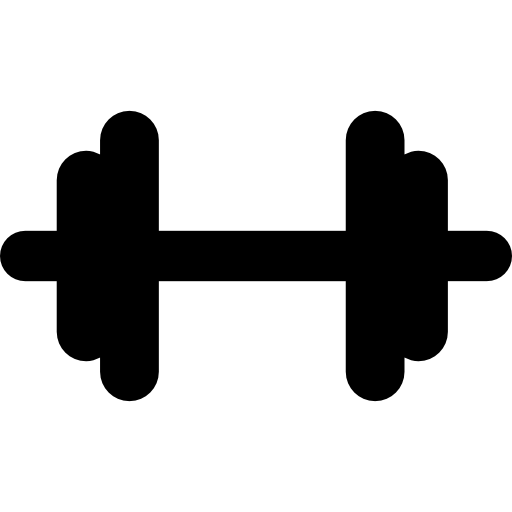

MENTAL
Autocuidado mental é estimular e desenvolver sua mente com atividades, fazendo com que ela fique consiente e saudável.
EMOCIONAL
Autocuidado emocional é manter suas emoções equilibradas. Sabendo controla-las sem que isso te afete de forma negativa.
FÍSICO
Autocuidado físico é cuidar de você mesmo de forma externa. Cuidando do seu corpo e se sentindo bem com sigo mesmo.
SOCIAL
Autocuidado social é manter laços com as pessoas que nós queremos por perto. Isso é para nos mantermos socialmente saudável.
ESPIRITUAL
Autocuidado espiritual é o cultivo da paz interior e do amor próprio. não é sobre ir a um lugar espiritual, mas sim, praticar a espiritualidade em si mesmo.